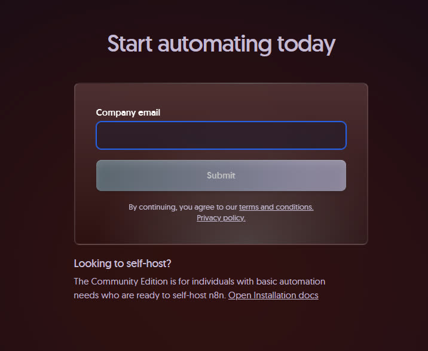
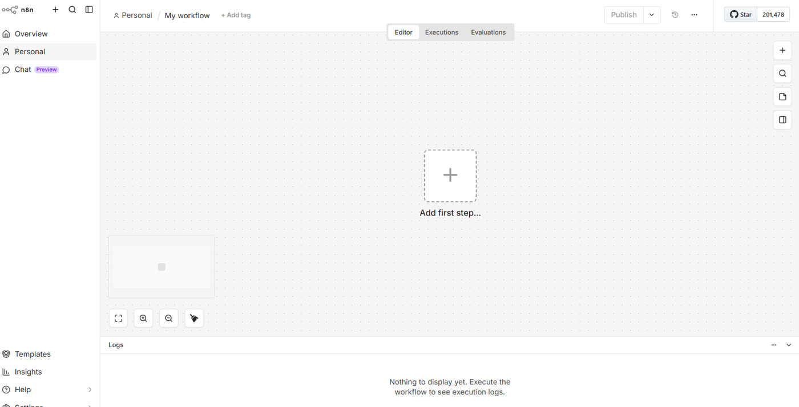
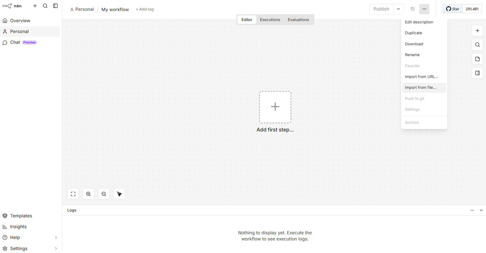
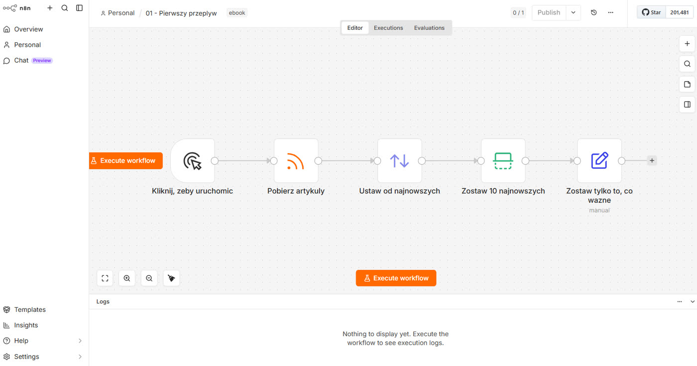
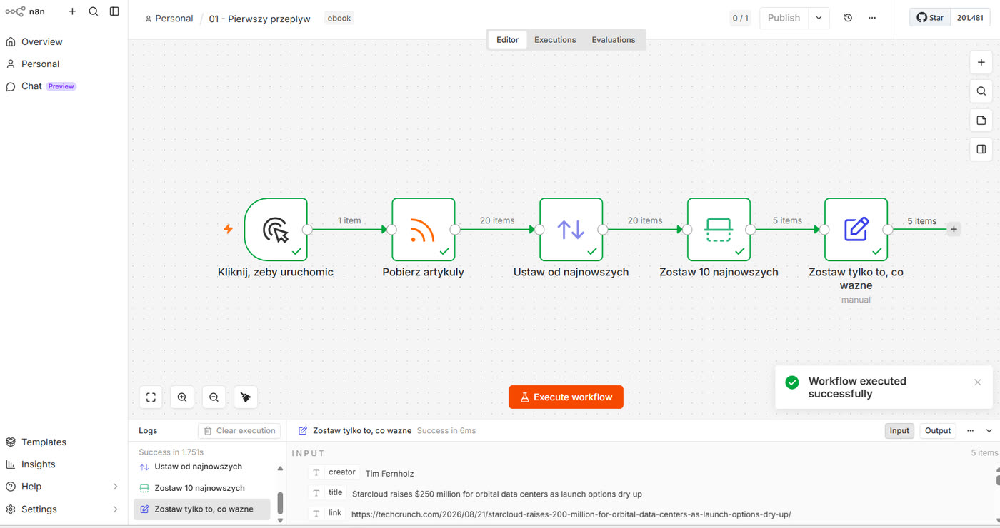
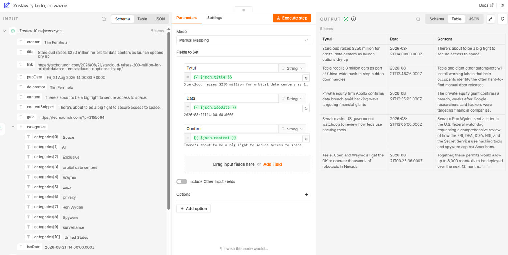

Rozdział 1
Rozdział 1. Uruchamiamy n8n
Zanim zrozumiesz, jak działa n8n, proponuję po prostu zobaczyć, jak to wszystko wygląda w praktyce. To być może kolejność odwrotna do tej, której uczono nas w szkole, gdzie zwykle najpierw jest teoria, a dopiero później zadanie. Nic nie uczy jednak szybciej niż działający system na własnym ekranie - i nic nie zniechęca skuteczniej niż teoria, której nie ma jeszcze do czego przyłożyć.
W tym rozdziale nie będę ci więc jeszcze wyjaśniał, czym jest węzeł ani dlaczego łączy się go w taki, a nie inny sposób. Zrobimy na razie tylko jedną rzecz: założysz konto, klikniesz parę razy myszką i zobaczysz na swoim ekranie gotowy, działający zautomatyzowany system, który sam pobierze dane i coś z nimi zrobi.
Poćwiczymy więc od razu import gotowego przepływu, jedno kliknięcie i sprawdzimy wynik. Zaczynamy więc od konta.
Zakładasz konto
n8n działa w dwóch wariantach: jako usługa w chmurze (n8n Cloud), na której nic nie instalujesz, albo jako coś, co stawiasz na własnym serwerze - w tym również lokalnie, na własnym komputerze. Tutaj omawiany będzie wyłącznie ten pierwszy sposób.
Otwórz przeglądarkę i wejdź na stronę n8n.io. W prawym górnym rogu kliknij przycisk „Get started" (rozpocznij).

Na ekranie zobaczyszformularz z polem „Company email" i przyciskiem „Submit".
W polu „Company email" podaj swój adres e-mail i kliknij „Submit". Na kolejnym formularzu ustaw hasło i wpisz imię i nazwisko jako nazwę wyświetlaną na koncie. Kliknij przycisk pod formularzem, żeby przejść dalej.
n8n poprosi cię o nazwę przestrzeni roboczej - fragmentu adresu, pod którym będzie działał twój n8n, na przykład „twoja-nazwa.app.n8n.cloud". Wpisz cokolwiek zapamiętywalnego i przejdź dalej.
Potwierdź regulamin i zakończ rejestrację. Na ekranie zobaczysz: komunikat, że na twój adres e-mail wysłano wiadomość z potwierdzeniem.
Otwórz swoją skrzynkę pocztową. Znajdziesz w niej mail z linkiem potwierdzającym adres e-mail. Kliknij ten link.
Sprawdź, czy działa: po kliknięciu linku przeglądarka przenosi cię z powrotem do n8n, na ekran twojej przestrzeni roboczej. W lewym górnym rogu zobaczysz nazwę, którą wybrałeś w kroku 3. Zobaczysz też duży przycisk „Create Workflow" (utwórz przepływ).
Pierwszy widok Twojego przepływu
Kliknij „Create Workflow". n8n otworzy nowy, pusty obszar roboczy przepływu - dalej będziemy nazywać go po prostu obszarem roboczym. Zobaczysz tło w drobną kratkę i jeden duży przycisk na środku: „Add first step" (dodaj pierwszy krok).

Nie klikaj jednak tego przycisku. Zamiast budować coś od zera, zaimportujemy na początek gotowy przepływ - zobaczysz cały działający system w kilka sekund, a od zera zaczniemy dopiero w rozdziale 3.
Importujesz gotowy przepływ
Pobierz plik 01-pierwszy-przeplyw.json ze strony heuristica.pl/automatyzacje-n8n, z sekcji „Pobierz przepływy". Znajdziesz tam wszystkie przepływy z tego poradnika. Zapisz go w miejscu, które łatwo znajdziesz, na przykład na swoim pulpicie.
W obszarze roboczym kliknij trzy kropki (⋯) w prawym górnym rogu ekranu. Z rozwiniętego menu wybierz „Import from File" (importuj z pliku).

W oknie systemowym, które się otworzy, znajdź i zaznacz pobrany plik 01-pierwszy-przeplyw.json, a potem potwierdź wybór.
Na ekranie natychmiast pojawi się gotowy przepływ: pięć prostokątów połączonych liniami ze strzałkami, w jednym poziomym rzędzie. To są węzły i połączenia między nimi - czym dokładnie są, dowiesz się w rozdziale 2. Teraz przyjrzymy im się bliżej.

Sprawdź, czy przepływ działa, klikając „Execute workflow" (uruchom przepływ) - pomarańczowy przycisk w prawym dolnym rogu ekranu. Poczekaj kilka sekund.
Na ekranie każdy węzeł, przez który przeszły dane, obrysowuje się na zielono, a pod nim pojawia się mała liczba - to liczba elementów, które przez niego przeszły. Jeśli wszystkie węzły w przepływie zmienią kolor na zielony, to znaczy, że system zadziałał - wykonał się prawidłowo od początku do końca.

Zielona obwódka mówi, że system zadziałał. Nie mówi jeszcze, co dla ciebie zrobił - to sprawdzimy w ostatnim kroku.
Kliknij teraz dwukrotnie ostatni węzeł, „Zostaw tylko to, co ważne". W panelu, który się otworzy z prawej strony, przełącz widok na Table. Zobaczysz listę pięciu artykułów pobranych z serwisu technologicznego, każdy z tytułem, datą publikacji i treścią - prawdziwe dane, które przepływ przed chwilą dla ciebie zebrał, posortował od najnowszego i oczyścił z tego, co niepotrzebne.

I to wszystko. Właśnie udało ci się uruchomić twój pierwszy system w n8n - i widzisz, co konkretnie dla ciebie zrobił.
Wariacje na temat
Otwórz zaimportowany przepływ jeszcze raz i kliknij pojedynczo każdy węzeł. Zobacz, czy potrafisz zgadnąć, co robi, zanim przeczytasz o tym w rozdziale 2.
Zmień nazwę przepływu (kliknij jego tytuł w lewym górnym rogu ekranu i wpisz nową nazwę) i sprawdź, czy „Execute workflow" nadal działa po zmianie.
Nie wiesz jeszcze, czym są „węzły" ani dlaczego strzałki łączą je akurat w tej kolejności - i to jest na tym etapie OK. Dowodem na to, że coś w n8n działa, jest na razie zielona obwódka na ekranie. W kolejnych częściach tego poradnika zrobimy inne ćwiczenia, które pozwolą ci lepiej zrozumieć, co naprawdę się pod tym wszystkim kryje.